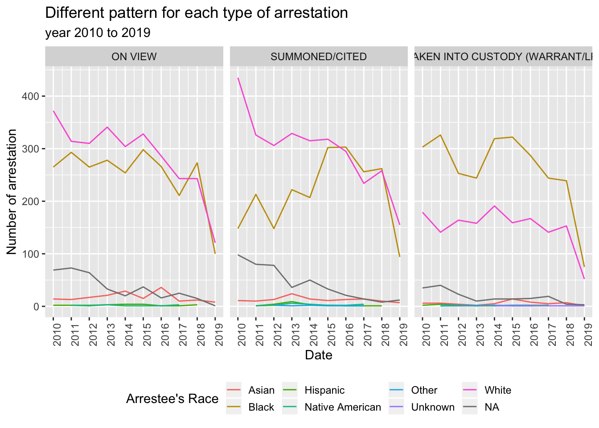
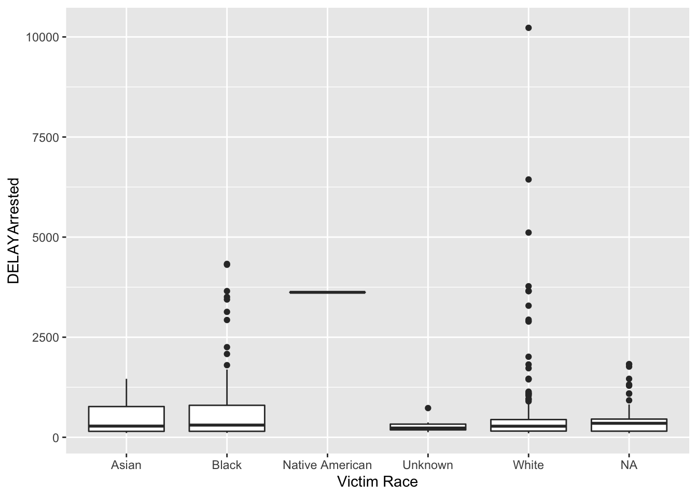
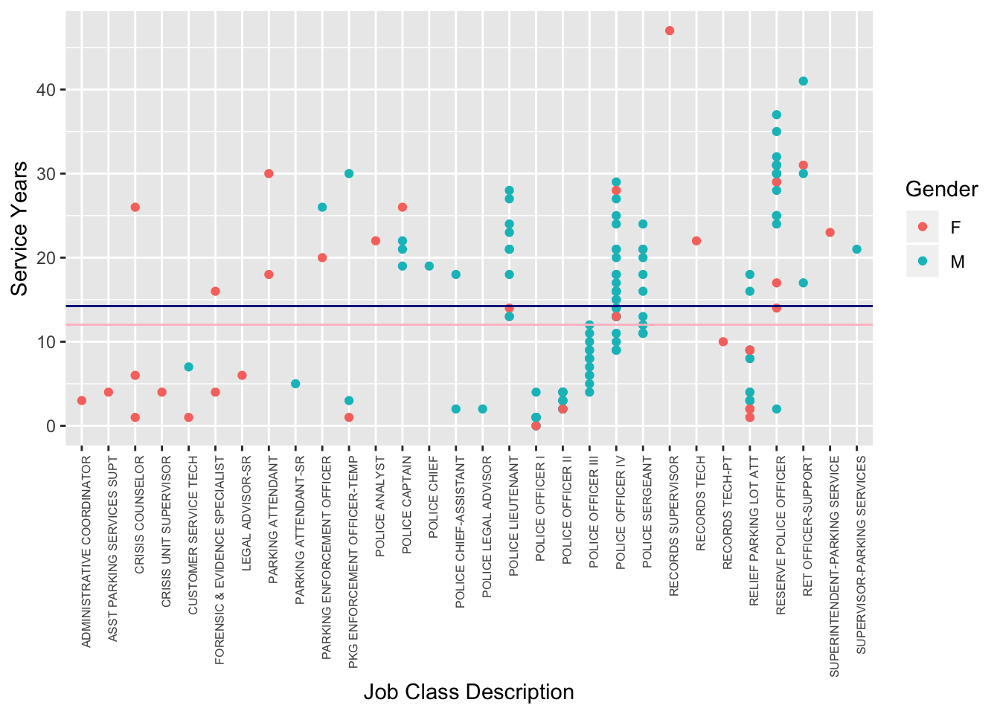

Chapter 3 Exploration analysis
In order to have a global overview about our table, we are going to have a zoom on each differents table.
3.1 Traffic data
In Figure 3.1, we observe that the main purpose of the arrestation is the limit speed violation. The ratio between male and female is negletible.
Figure 3.1: The higer purpose is the speef of limit
In Figure @ref(fig:Traffic-Ratio-Black/White), we observe
Figure 3.2: More black are arrested
3.2 Police arrested made.
In Figure 3.3, we observe
Figure 3.3: Evolution of the number of arrestation
In Figure @ref(fig:Police-arrested-made-Black/White-month), we observe
Figure 3.4: Evolution of the number of arrestation between the black and white people
In Figure @ref(fig:Police-arrested-made-Black/White-year), we observe
Figure 3.5: Evolution of the number of arrestation between the black and white people
In Figure @ref(fig:Arrestation-Male/Female-Black/White), we observe
Figure 3.6: Evolution of the number of arrestation between male and female
In Figure 3.7, we observe
Figure 3.7: Evolution of the number of arrestation between male and female
##Analyze the type of arrestation taking into account the race
graph5 = Police_arrest_made %>% count(`Arrestee's Race`, `Type of Arrest`, year) %>%
filter(!is.na(`Type of Arrest`))## Warning: Factor `Arrestee's Race` contains implicit NA, consider using `forcats::fct_explicit_na`ggplot(graph5,aes(x=year,y=n, fill= factor(`Arrestee's Race`), col= `Arrestee's Race`)) +
geom_line() +
facet_grid(~`Type of Arrest`)+
theme(axis.text.x = element_text(angle = 90, hjust = 1)) +
theme(legend.position ="bottom") +
theme(legend.key.size = unit(0.5, "cm")) +
labs(title = "Different pattern for each type of arrestation", subtitle = "year 2010 to 2019", x= "Date",y="Number of arrestation") +
scale_x_continuous( breaks = seq(2010,2019,by=1))
3.3 Incident reports
Incident_reports<- Incident_reports %>% mutate(month=month(`Date of Occurrence`), year= year(`Date of Occurrence`))
graph6 = Incident_reports %>%filter(year>=2010) %>% count(`Victim Race`, `Victim Gender` , year) %>% filter(`Victim Gender`=="F" | `Victim Gender`=="M")## Warning: Factor `Victim Race` contains implicit NA, consider using `forcats::fct_explicit_na`ggplot(graph6,aes(x=year,y=n, fill= factor(`Victim Race`), col= `Victim Race`)) +
geom_line() +
facet_grid(~`Victim Gender`)+
theme(axis.text.x = element_text(angle = 90, hjust = 1)) +
theme(legend.position ="bottom") +
theme(legend.key.size = unit(0.5, "cm")) +
labs(title = "White people are the Major victim ", subtitle = "year 2010 to 2019", x= "Date",y="Number of Victim") ## Warning: Factor `Victim Race` contains implicit NA, consider using `forcats::fct_explicit_na`
## Warning: Factor `Victim Race` contains implicit NA, consider using `forcats::fct_explicit_na`## Don't know how to automatically pick scale for object of type difftime. Defaulting to continuous.
##Employee demographics in the current of october 2016
graph7 = Employee_demographics %>% count(Gender,Race) %>% filter(Race != "M")
ggplot(graph7,aes(x=Race,y=n)) +
geom_bar(stat = "identity") +
facet_grid(~Gender)+
theme(axis.text.x = element_text(angle = 90, hjust = 1)) +
theme(legend.position ="bottom") +
theme(legend.key.size = unit(0.5, "cm")) +
labs(title = "Majority of White employee", subtitle = "Current of the year 2016", x= "Race",y="Number of employee") # Employee Demographics
Employee_demographics %>%
group_by(`Job Class Description`) %>%
count(`Job Class Description`) %>%
arrange(desc(n)) %>%
kable(caption= "Profession of the police officers by frequency", digits=2) %>%
kable_styling(bootstrap_options = "striped")| Job Class Description | n |
|---|---|
| POLICE OFFICER IV | 33 |
| RELIEF PARKING LOT ATT | 21 |
| RESERVE POLICE OFFICER | 20 |
| POLICE OFFICER II | 17 |
| POLICE OFFICER III | 13 |
| POLICE SERGEANT | 12 |
| POLICE OFFICER I | 11 |
| POLICE LIEUTENANT | 10 |
| POLICE CAPTAIN | 4 |
| RET OFFICER-SUPPORT | 4 |
| CRISIS COUNSELOR | 3 |
| PKG ENFORCEMENT OFFICER-TEMP | 3 |
| CUSTOMER SERVICE TECH | 2 |
| FORENSIC & EVIDENCE SPECIALIST | 2 |
| PARKING ATTENDANT | 2 |
| PARKING ENFORCEMENT OFFICER | 2 |
| POLICE CHIEF-ASSISTANT | 2 |
| ADMINISTRATIVE COORDINATOR | 1 |
| ASST PARKING SERVICES SUPT | 1 |
| CRISIS UNIT SUPERVISOR | 1 |
| LEGAL ADVISOR-SR | 1 |
| PARKING ATTENDANT-SR | 1 |
| POLICE ANALYST | 1 |
| POLICE CHIEF | 1 |
| POLICE LEGAL ADVISOR | 1 |
| RECORDS SUPERVISOR | 1 |
| RECORDS TECH | 1 |
| RECORDS TECH-PT | 1 |
| SUPERINTENDENT-PARKING SERVICE | 1 |
| SUPERVISOR-PARKING SERVICES | 1 |
#Comupting the mean for the next plot
meanM<- Employee_demographics%>%
group_by(Gender) %>%
summarize(MEANSERVICE = mean(`Service Years`))
Employee_demographics %>%
ggplot(aes(`Job Class Description`,`Service Years`)) +
geom_point(aes(color = Gender)) +
geom_hline(yintercept = 14.24603, color = "darkblue") +
geom_hline(yintercept = 12.02083, color = "pink") +
theme(axis.text.x = element_text(angle = 90, hjust = 1, size =6)) 
## $x
## [1] "Positions"
##
## $y
## [1] "Year of service"
##
## $title
## [1] "Service length per position and gender"
##
## $subtitle
## [1] "The average service is slighty longer for men,n/women have greater variance among year of service"
##
## $caption
## [1] "Employee_demographics.csv"
##
## attr(,"class")
## [1] "labels" #Computing the mean service length per race
meanR<- Employee_demographics%>%
group_by(Race) %>%
summarize(MEANSERVICE = mean(`Service Years`))
meanR## # A tibble: 4 x 2
## Race MEANSERVICE
## <fct> <dbl>
## 1 Black 13.3
## 2 Hispanic 7
## 3 M 6
## 4 White 14.0Employee_demographics %>%
ggplot(aes(`Job Class Description`,`Service Years`)) +
geom_point(aes(color = Race)) +
geom_hline(yintercept = 13.309502, color = "black") +
geom_hline(yintercept = 13.95312, color = "bisque2") +
geom_hline(yintercept = 7, color = "red") +
geom_hline(yintercept = 6, color = "orange") +
theme(axis.text.x = element_text(angle = 90, hjust = 1, size =6)) +
labs(title = "Service length per position and gender",subtitle = "The average service is slighty longer for men,n/women have greater variance among year of service",caption = "Employee_demographics.csv", x= "Positions", y="Year of service")3.4 Victim and Arrest distribution
## [1] "2010-01-01" "2010-01-01" "2010-01-01" "2010-01-01" "2010-01-01" "2010-01-05" "2010-01-06" "2010-01-09"
## [9] "2010-01-09" "2010-01-09" "2010-01-09" "2010-01-11" "2010-01-13" "2010-01-15" "2010-01-15" "2010-01-15"
## [17] "2010-01-19" "2010-01-21" "2010-01-21" "2010-01-27" "2010-01-29" "2010-02-02" "2010-02-02" "2010-02-03"
## [25] "2010-02-03" "2010-02-03" "2010-02-04" "2010-02-04" "2010-02-07" "2010-02-07" "2010-02-07" "2010-02-07"
## [33] "2010-02-09" "2010-02-13" "2010-02-14" "2010-02-14" "2010-02-15" "2010-02-16" "2010-02-18" "2010-02-18"
## [41] "2010-02-20" "2010-02-23" "2010-02-25" "2010-03-04" "2010-03-05" "2010-03-06" "2010-03-07" "2010-03-07"
## [49] "2010-03-08" "2010-03-10" "2010-03-13" "2010-03-15" "2010-03-15" "2010-03-16" "2010-03-16" "2010-03-17"
## [57] "2010-03-18" "2010-03-20" "2010-03-20" "2010-03-22" "2010-03-23" "2010-03-23" "2010-03-25" "2010-03-26"
## [65] "2010-03-27" "2010-03-28" "2010-03-28" "2010-03-30" "2010-03-31" "2010-04-01" "2010-04-02" "2010-04-02"
## [73] "2010-04-02" "2010-04-02" "2010-04-03" "2010-04-03" "2010-04-04" "2010-04-04" "2010-04-07" "2010-04-08"
## [81] "2010-04-09" "2010-04-09" "2010-04-11" "2010-04-11" "2010-04-13" "2010-04-14" "2010-04-14" "2010-04-16"
## [89] "2010-04-17" "2010-04-17" "2010-04-19" "2010-04-21" "2010-04-22" "2010-04-22" "2010-04-23" "2010-04-24"
## [97] "2010-04-25" "2010-04-26" "2010-04-27" "2010-04-28" "2010-04-29" "2010-04-30" "2010-05-01" "2010-05-01"
## [105] "2010-05-01" "2010-05-03" "2010-05-04" "2010-05-06" "2010-05-08" "2010-05-08" "2010-05-09" "2010-05-12"
## [113] "2010-05-12" "2010-05-15" "2010-05-15" "2010-05-16" "2010-05-16" "2010-05-18" "2010-05-18" "2010-05-21"
## [121] "2010-05-21" "2010-05-21" "2010-05-21" "2010-05-22" "2010-05-22" "2010-05-22" "2010-05-22" "2010-05-25"
## [129] "2010-05-25" "2010-05-25" "2010-05-26" "2010-05-28" "2010-05-28" "2010-05-29" "2010-05-29" "2010-05-29"
## [137] "2010-05-31" "2010-05-31" "2010-06-02" "2010-06-05" "2010-06-07" "2010-06-07" "2010-06-07" "2010-06-08"
## [145] "2010-06-08" "2010-06-08" "2010-06-10" "2010-06-10" "2010-06-11" "2010-06-11" "2010-06-11" "2010-06-12"
## [153] "2010-06-12" "2010-06-12" "2010-06-12" "2010-06-16" "2010-06-17" "2010-06-18" "2010-06-22" "2010-06-22"
## [161] "2010-06-23" "2010-06-24" "2010-06-25" "2010-06-27" "2010-06-27" "2010-06-27" "2010-06-29" "2010-06-30"
## [169] "2010-06-30" "2010-07-01" "2010-07-01" "2010-07-07" "2010-07-07" "2010-07-07" "2010-07-10" "2010-07-13"
## [177] "2010-07-14" "2010-07-15" "2010-07-15" "2010-07-15" "2010-07-16" "2010-07-16" "2010-07-16" "2010-07-16"
## [185] "2010-07-17" "2010-07-17" "2010-07-19" "2010-07-19" "2010-07-20" "2010-07-21" "2010-07-21" "2010-07-21"
## [193] "2010-07-21" "2010-07-22" "2010-07-23" "2010-07-24" "2010-07-24" "2010-07-25" "2010-07-25" "2010-07-25"
## [201] "2010-07-28" "2010-07-30" "2010-07-30" "2010-07-30" "2010-07-30" "2010-07-31" "2010-07-31" "2010-07-31"
## [209] "2010-08-04" "2010-08-05" "2010-08-06" "2010-08-06" "2010-08-06" "2010-08-07" "2010-08-07" "2010-08-08"
## [217] "2010-08-08" "2010-08-11" "2010-08-11" "2010-08-12" "2010-08-13" "2010-08-13" "2010-08-13" "2010-08-15"
## [225] "2010-08-15" "2010-08-16" "2010-08-17" "2010-08-18" "2010-08-18" "2010-08-18" "2010-08-20" "2010-08-20"
## [233] "2010-08-20" "2010-08-21" "2010-08-21" "2010-08-21" "2010-08-21" "2010-08-21" "2010-08-22" "2010-08-22"
## [241] "2010-08-25" "2010-08-26" "2010-08-26" "2010-08-27" "2010-08-27" "2010-08-27" "2010-08-27" "2010-08-27"
## [249] "2010-08-27" "2010-08-28" "2010-08-28" "2010-08-28" "2010-08-28" "2010-08-28" "2010-08-29" "2010-08-29"
## [257] "2010-08-29" "2010-08-29" "2010-08-29" "2010-08-29" "2010-08-31" "2010-09-01" "2010-09-03" "2010-09-04"
## [265] "2010-09-05" "2010-09-06" "2010-09-07" "2010-09-07" "2010-09-08" "2010-09-08" "2010-09-10" "2010-09-10"
## [273] "2010-09-11" "2010-09-11" "2010-09-13" "2010-09-14" "2010-09-14" "2010-09-15" "2010-09-17" "2010-09-18"
## [281] "2010-09-18" "2010-09-18" "2010-09-22" "2010-09-22" "2010-09-22" "2010-09-24" "2010-09-27" "2010-09-27"
## [289] "2010-09-28" "2010-09-29" "2010-09-29" "2010-10-01" "2010-10-01" "2010-10-02" "2010-10-02" "2010-10-02"
## [297] "2010-10-02" "2010-10-02" "2010-10-02" "2010-10-03" "2010-10-05" "2010-10-05" "2010-10-09" "2010-10-09"
## [305] "2010-10-09" "2010-10-11" "2010-10-14" "2010-10-16" "2010-10-16" "2010-10-18" "2010-10-19" "2010-10-21"
## [313] "2010-10-22" "2010-10-24" "2010-10-25" "2010-10-27" "2010-10-27" "2010-10-29" "2010-10-30" "2010-10-30"
## [321] "2010-10-30" "2010-11-04" "2010-11-04" "2010-11-06" "2010-11-10" "2010-11-10" "2010-11-12" "2010-11-13"
## [329] "2010-11-13" "2010-11-13" "2010-11-13" "2010-11-13" "2010-11-14" "2010-11-16" "2010-11-18" "2010-11-19"
## [337] "2010-11-19" "2010-11-20" "2010-11-20" "2010-11-20" "2010-11-21" "2010-11-21" "2010-11-23" "2010-11-24"
## [345] "2010-11-25" "2010-11-26" "2010-11-27" "2010-11-30" "2010-11-30" "2010-11-30" "2010-12-01" "2010-12-02"
## [353] "2010-12-04" "2010-12-05" "2010-12-05" "2010-12-06" "2010-12-10" "2010-12-11" "2010-12-12" "2010-12-13"
## [361] "2010-12-16" "2010-12-17" "2010-12-18" "2010-12-19" "2010-12-20" "2010-12-23" "2010-12-26" "2010-12-27"
## [369] "2010-12-27" "2010-12-30" "2011-01-01" "2011-01-03" "2011-01-03" "2011-01-05" "2011-01-05" "2011-01-05"
## [377] "2011-01-05" "2011-01-07" "2011-01-07" "2011-01-08" "2011-01-08" "2011-01-09" "2011-01-10" "2011-01-11"
## [385] "2011-01-12" "2011-01-13" "2011-01-13" "2011-01-14" "2011-01-14" "2011-01-16" "2011-01-20" "2011-01-20"
## [393] "2011-01-21" "2011-01-23" "2011-01-25" "2011-01-26" "2011-01-26" "2011-01-27" "2011-01-27" "2011-01-27"
## [401] "2011-01-28" "2011-01-28" "2011-01-28" "2011-01-29" "2011-01-30" "2011-01-31" "2011-02-01" "2011-02-01"
## [409] "2011-02-02" "2011-02-02" "2011-02-03" "2011-02-04" "2011-02-04" "2011-02-04" "2011-02-05" "2011-02-06"
## [417] "2011-02-07" "2011-02-08" "2011-02-09" "2011-02-11" "2011-02-11" "2011-02-13" "2011-02-15" "2011-02-16"
## [425] "2011-02-17" "2011-02-17" "2011-02-17" "2011-02-17" "2011-02-17" "2011-02-18" "2011-02-18" "2011-02-18"
## [433] "2011-02-20" "2011-02-22" "2011-02-23" "2011-02-24" "2011-02-27" "2011-02-28" "2011-02-28" "2011-03-01"
## [441] "2011-03-01" "2011-03-02" "2011-03-02" "2011-03-04" "2011-03-04" "2011-03-06" "2011-03-09" "2011-03-12"
## [449] "2011-03-12" "2011-03-12" "2011-03-12" "2011-03-13" "2011-03-13" "2011-03-14" "2011-03-15" "2011-03-17"
## [457] "2011-03-17" "2011-03-17" "2011-03-17" "2011-03-18" "2011-03-18" "2011-03-18" "2011-03-19" "2011-03-19"
## [465] "2011-03-20" "2011-03-20" "2011-03-22" "2011-03-23" "2011-03-25" "2011-03-26" "2011-03-28" "2011-03-29"
## [473] "2011-03-29" "2011-03-30" "2011-04-01" "2011-04-02" "2011-04-02" "2011-04-04" "2011-04-05" "2011-04-06"
## [481] "2011-04-06" "2011-04-08" "2011-04-09" "2011-04-13" "2011-04-14" "2011-04-15" "2011-04-18" "2011-04-19"
## [489] "2011-04-20" "2011-04-20" "2011-04-22" "2011-04-23" "2011-04-23" "2011-04-24" "2011-04-24" "2011-04-24"
## [497] "2011-04-26" "2011-04-26" "2011-04-27" "2011-04-27" "2011-04-28" "2011-04-28" "2011-04-28" "2011-04-29"
## [505] "2011-04-29" "2011-05-01" "2011-05-02" "2011-05-03" "2011-05-04" "2011-05-04" "2011-05-05" "2011-05-05"
## [513] "2011-05-05" "2011-05-06" "2011-05-06" "2011-05-06" "2011-05-07" "2011-05-08" "2011-05-08" "2011-05-09"
## [521] "2011-05-15" "2011-05-15" "2011-05-16" "2011-05-20" "2011-05-21" "2011-05-21" "2011-05-22" "2011-05-22"
## [529] "2011-05-22" "2011-05-23" "2011-05-23" "2011-05-23" "2011-05-23" "2011-05-24" "2011-05-25" "2011-05-26"
## [537] "2011-05-26" "2011-05-28" "2011-06-02" "2011-06-02" "2011-06-03" "2011-06-03" "2011-06-06" "2011-06-07"
## [545] "2011-06-09" "2011-06-10" "2011-06-10" "2011-06-10" "2011-06-10" "2011-06-11" "2011-06-11" "2011-06-11"
## [553] "2011-06-13" "2011-06-16" "2011-06-20" "2011-06-21" "2011-06-21" "2011-06-23" "2011-06-23" "2011-06-23"
## [561] "2011-06-24" "2011-06-26" "2011-06-27" "2011-06-29" "2011-06-30" "2011-07-01" "2011-07-02" "2011-07-07"
## [569] "2011-07-07" "2011-07-09" "2011-07-10" "2011-07-14" "2011-07-15" "2011-07-15" "2011-07-16" "2011-07-18"
## [577] "2011-07-20" "2011-07-21" "2011-07-21" "2011-07-22" "2011-07-22" "2011-07-23" "2011-07-24" "2011-07-25"
## [585] "2011-07-27" "2011-07-27" "2011-07-29" "2011-07-30" "2011-07-30" "2011-08-03" "2011-08-04" "2011-08-06"
## [593] "2011-08-10" "2011-08-11" "2011-08-12" "2011-08-13" "2011-08-15" "2011-08-16" "2011-08-16" "2011-08-16"
## [601] "2011-08-16" "2011-08-17" "2011-08-18" "2011-08-19" "2011-08-19" "2011-08-19" "2011-08-21" "2011-08-22"
## [609] "2011-08-22" "2011-08-22" "2011-08-23" "2011-08-23" "2011-08-25" "2011-08-25" "2011-08-26" "2011-08-26"
## [617] "2011-08-27" "2011-08-27" "2011-08-28" "2011-08-29" "2011-08-29" "2011-08-29" "2011-08-30" "2011-08-30"
## [625] "2011-09-01" "2011-09-04" "2011-09-06" "2011-09-06" "2011-09-06" "2011-09-07" "2011-09-07" "2011-09-09"
## [633] "2011-09-10" "2011-09-10" "2011-09-14" "2011-09-14" "2011-09-15" "2011-09-17" "2011-09-19" "2011-09-20"
## [641] "2011-09-20" "2011-09-21" "2011-09-22" "2011-09-25" "2011-09-25" "2011-09-25" "2011-09-26" "2011-09-26"
## [649] "2011-09-30" "2011-10-01" "2011-10-04" "2011-10-04" "2011-10-05" "2011-10-07" "2011-10-08" "2011-10-10"
## [657] "2011-10-11" "2011-10-11" "2011-10-12" "2011-10-13" "2011-10-22" "2011-10-22" "2011-10-24" "2011-10-27"
## [665] "2011-10-29" "2011-10-31" "2011-11-01" "2011-11-03" "2011-11-04" "2011-11-05" "2011-11-06" "2011-11-06"
## [673] "2011-11-06" "2011-11-09" "2011-11-10" "2011-11-11" "2011-11-11" "2011-11-12" "2011-11-12" "2011-11-12"
## [681] "2011-11-13" "2011-11-13" "2011-11-15" "2011-11-16" "2011-11-18" "2011-11-18" "2011-11-18" "2011-11-18"
## [689] "2011-11-18" "2011-11-20" "2011-11-22" "2011-11-23" "2011-11-26" "2011-11-28" "2011-11-28" "2011-11-29"
## [697] "2011-12-01" "2011-12-03" "2011-12-04" "2011-12-07" "2011-12-07" "2011-12-07" "2011-12-07" "2011-12-08"
## [705] "2011-12-08" "2011-12-09" "2011-12-11" "2011-12-12" "2011-12-12" "2011-12-12" "2011-12-13" "2011-12-14"
## [713] "2011-12-14" "2011-12-16" "2011-12-17" "2011-12-17" "2011-12-18" "2011-12-20" "2011-12-23" "2011-12-26"
## [721] "2011-12-30" "2011-12-30" "2011-12-30" "2011-12-30" "2012-01-03" "2012-01-03" "2012-01-06" "2012-01-08"
## [729] "2012-01-09" "2012-01-10" "2012-01-10" "2012-01-11" "2012-01-11" "2012-01-12" "2012-01-12" "2012-01-13"
## [737] "2012-01-15" "2012-01-15" "2012-01-15" "2012-01-17" "2012-01-18" "2012-01-19" "2012-01-19" "2012-01-19"
## [745] "2012-01-19" "2012-01-21" "2012-01-22" "2012-01-23" "2012-01-25" "2012-01-25" "2012-01-25" "2012-01-26"
## [753] "2012-01-28" "2012-01-30" "2012-02-03" "2012-02-04" "2012-02-04" "2012-02-05" "2012-02-05" "2012-02-08"
## [761] "2012-02-08" "2012-02-08" "2012-02-09" "2012-02-11" "2012-02-11" "2012-02-12" "2012-02-13" "2012-02-14"
## [769] "2012-02-14" "2012-02-15" "2012-02-16" "2012-02-16" "2012-02-17" "2012-02-17" "2012-02-21" "2012-02-22"
## [777] "2012-02-22" "2012-02-23" "2012-02-29" "2012-03-04" "2012-03-04" "2012-03-05" "2012-03-05" "2012-03-06"
## [785] "2012-03-07" "2012-03-08" "2012-03-09" "2012-03-10" "2012-03-14" "2012-03-14" "2012-03-15" "2012-03-16"
## [793] "2012-03-17" "2012-03-17" "2012-03-17" "2012-03-18" "2012-03-18" "2012-03-18" "2012-03-18" "2012-03-18"
## [801] "2012-03-19" "2012-03-21" "2012-03-22" "2012-03-25" "2012-03-25" "2012-03-26" "2012-03-27" "2012-03-29"
## [809] "2012-03-29" "2012-03-30" "2012-03-30" "2012-03-31" "2012-04-01" "2012-04-01" "2012-04-02" "2012-04-06"
## [817] "2012-04-06" "2012-04-08" "2012-04-10" "2012-04-13" "2012-04-14" "2012-04-14" "2012-04-15" "2012-04-15"
## [825] "2012-04-18" "2012-04-19" "2012-04-19" "2012-04-20" "2012-04-22" "2012-04-25" "2012-04-26" "2012-04-26"
## [833] "2012-04-26" "2012-04-27" "2012-04-28" "2012-04-30" "2012-04-30" "2012-05-02" "2012-05-02" "2012-05-03"
## [841] "2012-05-04" "2012-05-05" "2012-05-06" "2012-05-06" "2012-05-06" "2012-05-08" "2012-05-08" "2012-05-09"
## [849] "2012-05-10" "2012-05-10" "2012-05-15" "2012-05-15" "2012-05-16" "2012-05-16" "2012-05-17" "2012-05-17"
## [857] "2012-05-20" "2012-05-21" "2012-05-23" "2012-05-25" "2012-05-26" "2012-05-27" "2012-05-29" "2012-05-29"
## [865] "2012-05-29" "2012-05-31" "2012-05-31" "2012-05-31" "2012-06-01" "2012-06-02" "2012-06-02" "2012-06-04"
## [873] "2012-06-06" "2012-06-06" "2012-06-09" "2012-06-09" "2012-06-09" "2012-06-09" "2012-06-10" "2012-06-11"
## [881] "2012-06-14" "2012-06-16" "2012-06-17" "2012-06-17" "2012-06-19" "2012-06-20" "2012-06-22" "2012-06-24"
## [889] "2012-06-26" "2012-07-01" "2012-07-02" "2012-07-03" "2012-07-03" "2012-07-09" "2012-07-09" "2012-07-11"
## [897] "2012-07-12" "2012-07-12" "2012-07-13" "2012-07-13" "2012-07-13" "2012-07-17" "2012-07-18" "2012-07-20"
## [905] "2012-07-21" "2012-07-21" "2012-07-22" "2012-07-22" "2012-07-22" "2012-07-22" "2012-07-26" "2012-07-27"
## [913] "2012-07-28" "2012-07-28" "2012-07-31" "2012-08-01" "2012-08-03" "2012-08-04" "2012-08-06" "2012-08-08"
## [921] "2012-08-09" "2012-08-09" "2012-08-11" "2012-08-11" "2012-08-12" "2012-08-12" "2012-08-12" "2012-08-15"
## [929] "2012-08-15" "2012-08-15" "2012-08-16" "2012-08-16" "2012-08-16" "2012-08-17" "2012-08-17" "2012-08-17"
## [937] "2012-08-18" "2012-08-21" "2012-08-23" "2012-08-23" "2012-08-24" "2012-08-24" "2012-08-25" "2012-08-25"
## [945] "2012-08-25" "2012-08-25" "2012-08-25" "2012-08-26" "2012-08-27" "2012-08-27" "2012-08-29" "2012-08-30"
## [953] "2012-08-30" "2012-08-30" "2012-09-01" "2012-09-01" "2012-09-01" "2012-09-03" "2012-09-05" "2012-09-06"
## [961] "2012-09-06" "2012-09-08" "2012-09-09" "2012-09-09" "2012-09-11" "2012-09-13" "2012-09-13" "2012-09-15"
## [969] "2012-09-15" "2012-09-15" "2012-09-15" "2012-09-16" "2012-09-16" "2012-09-19" "2012-09-20" "2012-09-20"
## [977] "2012-09-20" "2012-09-21" "2012-09-21" "2012-09-22" "2012-09-23" "2012-09-24" "2012-09-26" "2012-09-26"
## [985] "2012-09-29" "2012-10-02" "2012-10-02" "2012-10-03" "2012-10-03" "2012-10-04" "2012-10-05" "2012-10-05"
## [993] "2012-10-06" "2012-10-10" "2012-10-11" "2012-10-11" "2012-10-12" "2012-10-13" "2012-10-13" "2012-10-14"
## [ reached 'max' / getOption("max.print") -- omitted 15040 entries ]test<-left_join(Incident_reports, Police_arrest_made, by = c("Date of Occurrence"="Date of Arrest"))
graph8 <- test %>%filter(year.x>=2010) %>% count(`Victim Race`, `Victim Gender` , year.x) %>% filter(`Victim Gender`=="F" | `Victim Gender`=="M") %>% filter(`Victim Race`=="Black")## Warning: Factor `Victim Race` contains implicit NA, consider using `forcats::fct_explicit_na`## Warning: Factor `Arrestee's Race` contains implicit NA, consider using `forcats::fct_explicit_na`## Warning: Factor `Arrestee's Gender` contains implicit NA, consider using `forcats::fct_explicit_na`ggplot() +
geom_line(aes(x=year.x,y=n,col=`Victim Race`), data = graph8) +
geom_line(aes(x=year.x, y=n,col=`Arrestee's Race`), data = graph9)ggplot(graph6,aes(x=year,y=n, fill= factor(`Victim Race`), col= `Victim Race`)) +
geom_line() +
facet_grid(~`Victim Gender`)+
theme(axis.text.x = element_text(angle = 90, hjust = 1)) +
theme(legend.position ="bottom") +
theme(legend.key.size = unit(0.5, "cm")) +
labs(title = "White people are the Major victim ", subtitle = "year 2010 to 2019", x= "Date",y="Number of Victim")